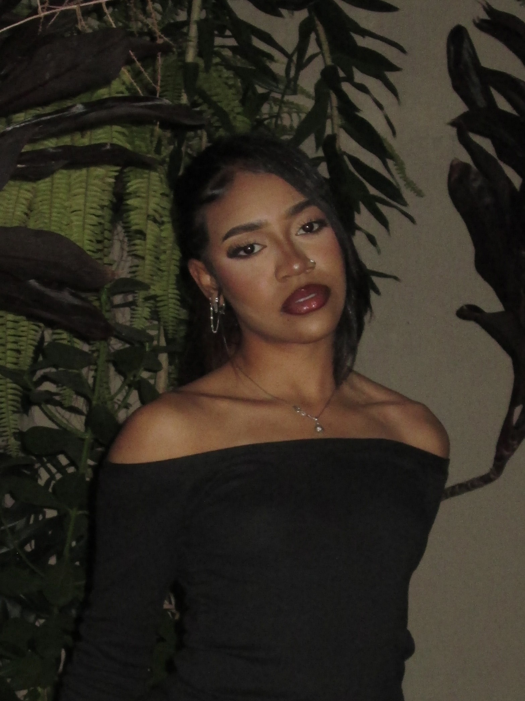
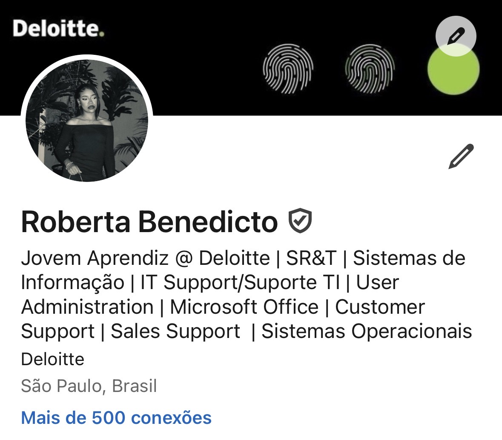
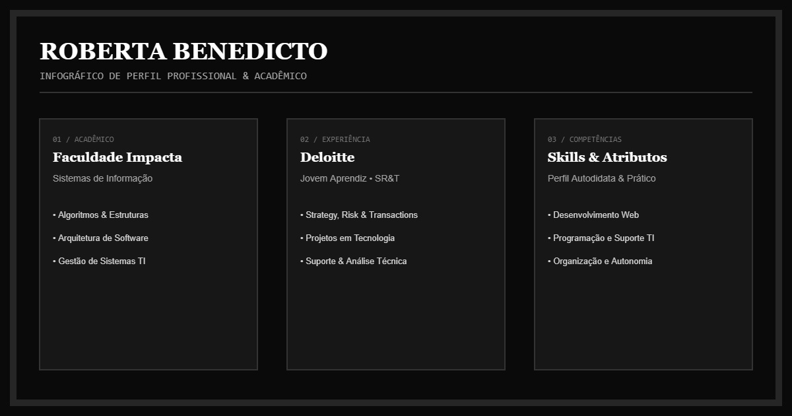

Roberta Benedicto
Jovem aprendiz
Estou começando minha trajetória profissional com curiosidade, dedicação e vontade de aprender. Aqui você encontra um pouco do que eu crio.
Conheça-me
Sobre mim
Sou estudante de Sistemas de Informação na Faculdade Impacta e Jovem Aprendiz na Deloitte, na área de Strategy, Risk & Transactions (SR&T), com atuação ligada à tecnologia e programação. Sou uma pessoa determinada, organizada e autodidata, que gosta de aprender coisas novas e transformar conhecimentos em prática. Tenho experiência com projetos de tecnologia, desenvolvimento web, suporte em TI e trabalho em equipe, além de participar de mentorias e iniciativas que contribuem para meu crescimento pessoal e profissional. Meu objetivo é continuar me desenvolvendo na área de tecnologia, ampliar minhas habilidades e conquistar novas oportunidades, construindo uma carreira sólida e contribuindo para projetos que gerem impacto positivo na sociedade.
Vídeo
Um registro em movimento do meu trabalho.
Áudio
Ouça uma gravação minha.
Descrição curta do áudio
Imagem
Passe o mouse para revelar as cores.

Infográfico
Dados e ideias organizados visualmente.

Deslize para os lados para ver o infográfico completo.
Animação
Ideias que ganham movimento.
Música
Uma produção sonora para fechar a visita.